Bodu package matrix
The Bodu suite ships as a family of focused NuGet packages, each with a clear responsibility. This page is the authoritative list — what every package is for, where it lives in the dependency graph, and how mature its public surface is today.
For the high-level shape of each library, follow the Intro link in the table; for runnable samples, the Get started link.
At a glance
| Category | Package | Status | Depends on | Intro | Get started |
|---|---|---|---|---|---|
| Foundation | Bodu · Bodu.Core |
Stable | (BCL only) | Bodu.Core | Get started |
| Collections | Bodu.Collections |
Stable | Bodu.Core |
Bodu.Collections | Get started |
| Concurrent collections | Bodu.Collections.Concurrent |
Stable | Bodu.Collections |
Bodu.Collections.Concurrent | Get started |
| Hashing | Bodu.IO.Hashing |
Stable | Bodu.Core, System.IO.Hashing |
Bodu.IO.Hashing | Get started |
| Cryptography | Bodu.Security.Cryptography |
Stable | Bodu.Core, System.Security.Cryptography |
Bodu.Security.Cryptography | Get started |
| Calendar runtime | Bodu.Globalization.Calendar |
Stable | Bodu.Core |
Bodu.Globalization.Calendar | Get started |
| Text encoding | Bodu.Text.Encoding |
Stable | Bodu.Core |
Bodu.Text.Encoding | Get started |
| Text filtering | Bodu.Text.Filtering |
Preview | Bodu.Core |
Bodu.Text.Filtering | Get started |
| Text formats (umbrella) | Bodu.Text.Formats |
Preview | Bodu.Text.Delimited, Bodu.Text.DotEnv, Bodu.Text.Ini |
Bodu.Text.Formats | Get started |
| Delimited (CSV / TSV) | Bodu.Text.Delimited |
Preview | Bodu.Text.Serialization, Bodu.Core |
Bodu.Text.Formats | Get started |
| DotEnv | Bodu.Text.DotEnv |
Preview | Bodu.Text.Serialization, Bodu.Core |
Bodu.Text.Formats | Get started |
| INI | Bodu.Text.Ini |
Preview | Bodu.Text.Serialization, Bodu.Core |
Bodu.Text.Formats | Get started |
| Text formats source generator | Bodu.Text.Formats.Generators |
Preview | Microsoft.CodeAnalysis.CSharp (build-time only; not yet packable; project reference only) |
Bodu.Text.Formats.Generators | Get started |
| TOML serializer | Bodu.Text.Toml |
Stable | Bodu.Text.Serialization, Bodu.Core |
Bodu.Text.Toml | Get started |
| Bencode serializer | Bodu.Text.Bencode |
Stable | Bodu.Text.Serialization, Bodu.Core |
Bodu.Text.Bencode | Get started |
| YAML serializer | Bodu.Text.Yaml |
Preview | Bodu.Text.Serialization, Bodu.Core |
Bodu.Text.Yaml | Get started |
| Text configuration | Bodu.Text.Configuration |
Stable | Bodu.Core |
Bodu.Text.Configuration | Get started |
| Configuration bridge | Bodu.Extensions.Configuration.Text |
Stable | Bodu.Text.Configuration, Bodu.Text.Toml, Bodu.Text.Bencode, Bodu.Core, Microsoft.Extensions.Configuration |
Bodu.Extensions.Configuration.Text | Get started |
| Numerics | Bodu.Numerics |
Stable | Bodu.Core |
Bodu.Numerics | Get started |
| Financial | Bodu.Financial |
Stable | Bodu.Numerics, Bodu.Core |
Bodu.Financial | Get started |
Companion packages
Several capabilities ship as independent companion packages so they can release on their own cadence without forcing a main-library rebuild. The calendar runtime in particular is intentionally small — fluent rule authoring, plugin loading, and dependency-injection registration are all opt-in.
| Package | Status | Purpose | Depends on |
|---|---|---|---|
Bodu.Globalization.Calendar.Builder |
Stable | Fluent, chainable C# API for authoring notable-date documents in code, with XML / JSON serialization and load/save. | Bodu.Globalization.Calendar |
Bodu.Globalization.Calendar.DependencyInjection |
Stable | IServiceCollection extensions for registering INotableDateService over a loaded NotableDateResource. |
Bodu.Globalization.Calendar, Microsoft.Extensions.DependencyInjection.Abstractions |
Bodu.Globalization.Calendar.Plugins |
Stable | Trust-gated loading of external assemblies that contribute custom INotableDateAlgorithm implementations. |
Bodu.Globalization.Calendar |
Bodu.Globalization.Calendar.Tool |
Preview | The bodu-calendar command-line tool (installed with dotnet tool install): validates notable-date XML/JSON documents with the stable BODU-CAL-* diagnostics (lint), compiles them to sealed .bcal binary packs (compile), and inspects compiled packs (info). |
Bodu.Globalization.Calendar |
Bodu.Globalization.Calendar.Build |
Preview | MSBuild integration for notable-date rule packs: the CompileNotableDatePack task and NotableDatePack items compile XML/JSON documents to sealed .bcal packs during build, incrementally, via the bundled bodu-calendar tool. A development dependency — no runtime reference is added to the consuming project. |
(build-time only; bundles the bodu-calendar tool) |
Bodu.Globalization.Calendar.Caching |
Stable | CachingNotableDateService, a decorator that wraps any INotableDateService and serves computed notable dates from a per-territory, per-civil-year cache (in-memory, or one TOML/JSON file per territory), refreshing on a configurable time-to-live or a resource-version change. Includes its own DI registration. |
Bodu.Globalization.Calendar, Bodu.Text.Toml, Bodu.Core |
Bodu.Globalization.Calendar.Caching.Distributed |
Stable | Distributed (IDistributedCache / Redis) storage backend for the notable-date cache: DistributedNotableDateCache over any IDistributedCache, with the AddDistributedNotableDateCache / AddRedisNotableDateCache DI registrations. |
Bodu.Globalization.Calendar.Caching, Bodu.Globalization.Calendar, Bodu.Core, Microsoft.Extensions.Caching.StackExchangeRedis |
Bodu.Globalization.Calendar.Caching.Sqlite |
Stable | SQLite storage backend for the notable-date cache: SqliteNotableDateCache persisting computed years in a SQLite database, with the AddSqliteNotableDateCache DI registration. |
Bodu.Globalization.Calendar.Caching, Bodu.Globalization.Calendar, Bodu.Core, Microsoft.Data.Sqlite |
Bodu.Globalization.Recurrence |
Preview | RFC 5545 (iCalendar) recurrence rules — RecurrenceRule / RecurrenceRuleBuilder / RecurrenceSet parsing, formatting, and occurrence enumeration — plus CronExpression cron-schedule parsing and AnchoredInterval instant-anchored intervals, every form answering both next- and previous-occurrence queries. |
Bodu.Core |
Bodu.Text.Serialization |
Stable | Shared, format-agnostic serialization primitives for the Bodu System.Text.Json-shaped text serializers (Bencode, TOML, YAML, Delimited, DotEnv, INI): the attribute family, ignore/creation/unmapped-member/naming enums, serialization callback interfaces, and naming policies. Consumed by all six per-format serializer packages. |
Bodu.Core |
Bodu.Financial.DependencyInjection |
Stable | IServiceCollection extensions for registering Bodu.Financial currency-lookup and monetary services via AddFinancialService. |
Bodu.Financial, Microsoft.Extensions.DependencyInjection.Abstractions |
Bodu.Financial.Serialization.Json |
Stable | System.Text.Json converters, the FinancialJsonPolicy (Strict / Lenient / Compact), the AddFinancialJsonConverters() registration, and the AddFinancialJson() DI registration for the Bodu.Financial types (Money, Money<TCurrency>, CalculatedMoney, MoneyBag, ExchangeRate, CurrencyPair), keeping the core financial library serialization-agnostic. |
Bodu.Financial, System.Text.Json, Microsoft.Extensions.DependencyInjection.Abstractions |
Bodu.Numerics.Serialization.Json |
Preview | System.Text.Json converters, converter factories, and the AddNumericsJsonConverters() registration for the Bodu.Numerics types (Fraction<T>, BigDecimal, Interval<T>, DiscreteInterval<T>, IntervalSet<T>), keeping the core numerics library serialization-agnostic. |
Bodu.Numerics, System.Text.Json |

Bodu.Globalization.Calendar.Builder
Bodu.Globalization.Calendar.DependencyInjection
Bodu.Globalization.Calendar.Plugins
Bodu.Globalization.Calendar.Tool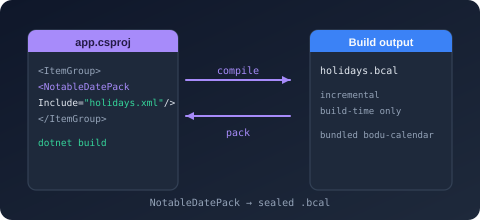
Bodu.Globalization.Calendar.Build
Bodu.Globalization.Calendar.Caching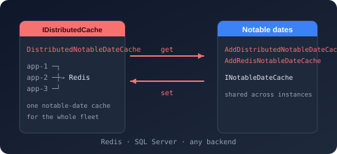
Bodu.Globalization.Calendar.Caching.Distributed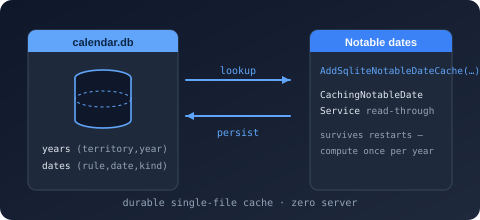
Bodu.Globalization.Calendar.Caching.Sqlite
Bodu.Text.Serialization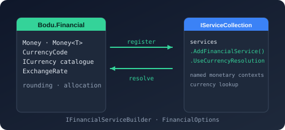
Bodu.Financial.DependencyInjection
Bodu.Financial.Serialization.Json
Bodu.Numerics.Serialization.JsonFile formats
Legacy binary container and document formats, layered so each level is usable on its own: a general-purpose compound-file container, a record-stream codec, and the narrow read-only readers built on them. Bodu.Formats.Excel.Binary reads .xls workbooks over Bodu.IO.Compound and Bodu.IO.Biff; the Outlook readers share one MAPI value model, with the .msg reader over Bodu.IO.Compound and the .pst mail-store reader over Bodu.IO.Pst.
| Package | Status | Purpose | Depends on |
|---|---|---|---|
Bodu.IO.Compound |
Stable | Reader and writer for the OLE2 / Compound File Binary (CFB) container — the structured-storage envelope used by legacy Office files. Opens existing containers (exposing the embedded named streams) and authors new ones via CompoundFile.Create and the builder API, with no application-format knowledge. |
Bodu.Core |
Bodu.IO.Biff |
Preview | A low-level codec for the Excel Binary Interchange File Format (BIFF5 and BIFF8) record streams found inside legacy .xls workbooks — the substrate beneath Bodu.Formats.Excel.Binary, in the same relation Bodu.IO.Pst has to Bodu.Formats.Outlook.Pst. The forward-only, allocation-free BiffReader frames each record, establishes the version from BOF and the code page from CODEPAGE, and exposes typed accessors for cell, sheet, and workbook-globals records; BiffSstReader walks the BIFF8 shared string table across its CONTINUE records; BiffWriter emits BIFF5 or BIFF8 records. No compound-file dependency, no workbook or cell model, no formula evaluation. |
Bodu.Core, System.Text.Encoding.CodePages |
Bodu.Formats.Excel.Binary |
Stable | Narrow, read-only BIFF5 and BIFF8 (.xls) reader that surfaces raw worksheet cell values — strings, numbers, booleans, and errors — without formula evaluation, styling, or higher-level interpretation. |
Bodu.IO.Compound, Bodu.IO.Biff, Bodu.Core |
Bodu.IO.Pst |
Preview | Low-level, read-only container reader for the Outlook personal-folders format (PST / MS-PST). Reads the node database of Unicode and ANSI files — header, node and block B-trees, block data with the permute and cyclic encodings decoded and checksums verified, multi-block data trees, and per-node subnode trees — and the LTP layer over it: heap-on-node, BTree-on-heap, and per-node property-context and table-context views with wire-typed values. The substrate a message-level reader builds on. No MAPI semantics and no writing. | Bodu.Collections, Bodu.Core |
Bodu.Formats.Outlook |
Preview | The shared MAPI value model for the Outlook format readers: property tags and types, decoded property values with a tag-addressed collection, named-property identities, recipient and attachment enumerations, and the shared exception hierarchy. Container-free — the .msg reader (Bodu.Formats.Outlook.Msg) and the .pst mail-store reader (Bodu.Formats.Outlook.Pst, over Bodu.IO.Pst) build on it rather than owning the model. |
Bodu.Core |
Bodu.Formats.Outlook.Msg |
Preview | Read-only reader for the Outlook message format (.msg / MS-OXMSG) over the Bodu.IO.Compound OLE2 container. Opens a message as a disposable session exposing every decoded MAPI property, the recipient and attachment tables, nested attached messages, named-property resolution, and the text, HTML, and compressed-RTF bodies — with no MAPI session emulation or message authoring. |
Bodu.IO.Compound, Bodu.Formats.Outlook, Bodu.Core |
Bodu.Formats.Outlook.Pst |
Preview | Read-only reader for the Outlook personal-folders format (.pst / MS-PST, Unicode and ANSI formats) over the Bodu.IO.Pst node-database container. Opens a mail store as a disposable session exposing the store properties, the folder hierarchy, and every message with its decoded MAPI properties, recipients, attachments, nested embedded messages, store-wide named-property resolution, and the text, HTML, and compressed-RTF bodies — with no MAPI session emulation or store authoring. |
Bodu.IO.Pst, Bodu.Formats.Outlook, Bodu.Core |

Bodu.IO.Biff
Bodu.IO.Pst
Bodu.Formats.Outlook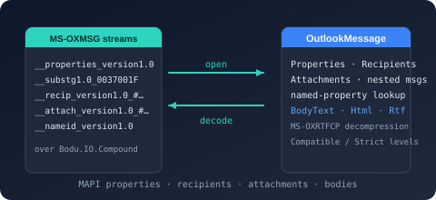
Bodu.Formats.Outlook.Msg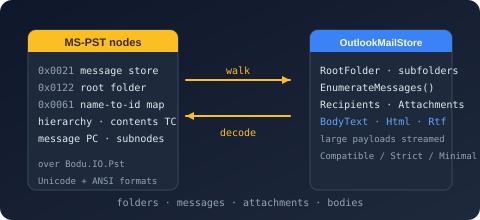
Bodu.Formats.Outlook.PstExchange-rate providers and caching
Several exchange-rate providers ship as independent packages over a shared IDatedRateProvider / IRateProvider contract, so consumers pull in only the data sources they need; each provider package ships its own Add<Source>ExchangeRates dependency-injection registration, delegating the shared HttpClient and resilience plumbing to Bodu.Financial.ExchangeRates.DependencyInjection. The contract exposes a symmetric single-date/range lookup matrix (synchronous and asynchronous): single-date getters return a RateLookupResult (the resolved rate plus the applied date-resolution and offset), and range getters return a RateRangeResult (the rates, the requested window, and the observed span; it is itself an IReadOnlyList<ExchangeRate>). The HTTP-backed providers share the WebRateProvider base from the Bodu.Financial.ExchangeRates infrastructure package and are IDisposable — each either builds and owns its HttpClient from options (via RateProviderHttpClientFactory) or borrows a caller-supplied one. The Reserve Bank of Australia provider reads the RBA's published .xls files through the binary-format packages above — a dependency on the container and codec layers, not on anything RBA-specific. A standalone caching layer can decorate any provider with a shared on-disk TOML cache.
The core money, currency, and FX value types live in Bodu.Financial (see At a glance); everything below is an opt-in companion.
| Package | Status | Purpose | Depends on |
|---|---|---|---|
Bodu.Financial.ExchangeRates |
Preview | Web exchange-rate provider infrastructure: the abstract WebRateProvider and PairWebRateProvider<TSeries> bases every per-source provider package builds on, plus the shared fetch machinery — WebRateProviderOptions, single-flight request coalescing (SingleFlightCoordinator<TKey>), on-disk raw-response caching (FileSystemByteCache<TKey>), HttpClient construction (RateProviderHttpClientFactory), and the pair-load contracts (IPairRateLoader, IPairRateSource<TSeries>). Keeps the HTTP machinery out of the core Bodu.Financial package. |
Bodu.Financial, Bodu.Core, Microsoft.Extensions.Logging.Abstractions |
Bodu.Financial.ExchangeRates.DependencyInjection |
Stable | Shared dependency-injection machinery for the web-based exchange-rate providers. Exposes AddWebRateProvider on IFinancialServiceBuilder (declared in the Bodu.Financial.ExchangeRates namespace), handling HttpClient configuration with Polly resilience, options binding, and singleton registration so each provider package's own DI registration delegates its plumbing here. |
Bodu.Financial.ExchangeRates, Bodu.Financial.DependencyInjection, Bodu.Core, Microsoft.Extensions.Http.Resilience |
Bodu.Financial.ExchangeRates.Rba |
Stable | Downloads and parses the RBA's published daily exchange-rate .xls files, serving them as ExchangeRate values through IDatedRateProvider / IRateProvider, with an async range API and in-memory plus on-disk caching. Includes its own AddRbaExchangeRates DI registration (in the Bodu.Financial.ExchangeRates namespace), binding RbaRateProviderOptions and backing the provider with a configured HttpClient. |
Bodu.Formats.Excel.Binary, Bodu.Financial.ExchangeRates, Bodu.Financial, Bodu.Financial.DependencyInjection, Bodu.Financial.ExchangeRates.DependencyInjection, Bodu.Core |
Bodu.Financial.ExchangeRates.Boe |
Stable | Queries the Bank of England's Interactive Statistical Database (IADB) CSV endpoint for daily spot rates, serving them as ExchangeRate values through IDatedRateProvider / IRateProvider, with an async range API and in-memory plus on-disk caching. Includes its own AddBoeExchangeRates DI registration (in the Bodu.Financial.ExchangeRates namespace), binding BoeRateProviderOptions and backing the provider with a configured HttpClient. |
Bodu.Text.Delimited, Bodu.Financial.ExchangeRates, Bodu.Financial, Bodu.Financial.DependencyInjection, Bodu.Financial.ExchangeRates.DependencyInjection, Bodu.Core |
Bodu.Financial.ExchangeRates.Ecb |
Stable | Downloads and parses the ECB's published eurofxref euro foreign-exchange reference-rate XML feeds, serving them as ExchangeRate values through IDatedRateProvider / IRateProvider, with an async range API and in-memory plus on-disk caching. Includes its own AddEcbExchangeRates DI registration (in the Bodu.Financial.ExchangeRates namespace), binding EcbRateProviderOptions and backing the provider with a configured HttpClient. |
Bodu.Financial.ExchangeRates, Bodu.Financial, Bodu.Financial.DependencyInjection, Bodu.Financial.ExchangeRates.DependencyInjection, Bodu.Core |
Bodu.Financial.ExchangeRates.Yahoo |
Stable | Fetches and parses the Yahoo Finance v8 chart JSON service, serving the results as ExchangeRate values through IDatedRateProvider / IRateProvider, with an async range API over arbitrary currency pairs. Includes its own AddYahooExchangeRates DI registration (in the Bodu.Financial.ExchangeRates namespace), binding YahooRateProviderOptions and backing the provider with a configured HttpClient. |
Bodu.Financial.ExchangeRates, Bodu.Financial, Bodu.Financial.DependencyInjection, Bodu.Financial.ExchangeRates.DependencyInjection, Bodu.Core |
Bodu.Financial.ExchangeRates.Ofx |
Stable | Fetches and parses the OFX (ofx.com) public spot-rate-history JSON service, serving the results as ExchangeRate values through IDatedRateProvider / IRateProvider, with an async range API over arbitrary currency pairs. Includes its own AddOfxExchangeRates DI registration (in the Bodu.Financial.ExchangeRates namespace), binding OfxRateProviderOptions and backing the provider with a configured HttpClient. |
Bodu.Financial.ExchangeRates, Bodu.Financial, Bodu.Financial.DependencyInjection, Bodu.Financial.ExchangeRates.DependencyInjection, Bodu.Core |
Bodu.Financial.ExchangeRates.Xe |
Experimental | Fetches and parses the XE.com charting-rates JSON service, serving the results as ExchangeRate values through IDatedRateProvider / IRateProvider, with an async range API over arbitrary currency pairs; the authorization token the endpoint requires is recovered by scraping an unversioned public XE page, so a site change can silently reduce the provider to empty results — pair it with a stable primary feed. Includes its own AddXeExchangeRates DI registration (in the Bodu.Financial.ExchangeRates namespace), binding XeRateProviderOptions and backing the provider with a configured HttpClient. |
Bodu.Financial.ExchangeRates, Bodu.Financial, Bodu.Financial.DependencyInjection, Bodu.Financial.ExchangeRates.DependencyInjection, Bodu.Core |
Bodu.Financial.ExchangeRates.Oanda |
Preview | Fetches and parses the OANDA Historical Currency Converter rate-history JSON service, serving the results as ExchangeRate values through IDatedRateProvider / IRateProvider, with an async range API over arbitrary currency pairs. The anonymous endpoint serves a rolling recent window (roughly the last 180 days), advertised through the provider's HistoryAvailability. Includes its own AddOandaExchangeRates DI registration (in the Bodu.Financial.ExchangeRates namespace), binding OandaRateProviderOptions and backing the provider with a configured HttpClient. |
Bodu.Financial.ExchangeRates, Bodu.Financial, Bodu.Financial.DependencyInjection, Bodu.Financial.ExchangeRates.DependencyInjection, Bodu.Core |
Bodu.Financial.ExchangeRates.Fixer |
Preview | Fetches and parses the Fixer (fixer.io) time-series and single-date JSON endpoints per currency pair, serving the results as ExchangeRate values through IDatedRateProvider / IRateProvider. Requires a Fixer access_key on FixerRateProviderOptions. Includes its own AddFixerExchangeRates DI registration (in the Bodu.Financial.ExchangeRates namespace). |
Bodu.Financial.ExchangeRates, Bodu.Financial, Bodu.Financial.DependencyInjection, Bodu.Financial.ExchangeRates.DependencyInjection, Bodu.Core |
Bodu.Financial.ExchangeRates.ExchangeRateHost |
Preview | Fetches and parses the exchangerate.host time-series and single-date JSON endpoints per currency pair (quotes keyed by concatenated source+quote code), serving the results through IDatedRateProvider / IRateProvider. Requires an access_key on ExchangeRateHostRateProviderOptions. Includes its own AddExchangeRateHostExchangeRates DI registration (in the Bodu.Financial.ExchangeRates namespace). |
Bodu.Financial.ExchangeRates, Bodu.Financial, Bodu.Financial.DependencyInjection, Bodu.Financial.ExchangeRates.DependencyInjection, Bodu.Core |
Bodu.Financial.ExchangeRates.Fred |
Preview | Fetches and parses the St. Louis Fed FRED series/observations JSON endpoint, mapping each currency pair to a FRED series_id through FredRateProviderOptions.SeriesMap (built-in map for the major USD pairs). Requires an api_key. Includes its own AddFredExchangeRates DI registration (in the Bodu.Financial.ExchangeRates namespace). |
Bodu.Financial.ExchangeRates, Bodu.Financial, Bodu.Financial.DependencyInjection, Bodu.Financial.ExchangeRates.DependencyInjection, Bodu.Core |
Bodu.Financial.ExchangeRates.Imf |
Preview | Downloads and parses the IMF's monthly Representative Exchange Rates tab-separated report, serving daily USD-anchored rates through IDatedRateProvider / IRateProvider. A single-base bulk provider over WebRateProvider (base USD, cross pairs rejected) that normalizes the report's quotation direction on ingest; keyless, with a per-month on-disk cache. Includes its own AddImfExchangeRates DI registration (in the Bodu.Financial.ExchangeRates namespace). |
Bodu.Text.Delimited, Bodu.Financial.ExchangeRates, Bodu.Financial, Bodu.Financial.DependencyInjection, Bodu.Financial.ExchangeRates.DependencyInjection, Bodu.Core |
Bodu.Financial.ExchangeRates.Caching |
Stable | CachingRateProvider, a one-cache-per-provider decorator that wraps any IDatedRateProvider and serves fresh rates from a pluggable cache cascade — InMemoryRateCache and the on-disk TomlFileRateCache (one TOML file per provider and currency pair) — delegating to the inner provider only on a miss; plus AggregatingRateProvider, which groups named child providers behind one entry point and combines them with a pluggable strategy (prioritised fallback, averaging, or per-FX-pair routing). Includes its own DI registration (AddCachedRateProvider, AddAggregatedRateProvider, in the Bodu.Financial.ExchangeRates namespace). |
Bodu.Text.Toml, Bodu.Financial, Bodu.Financial.DependencyInjection, Bodu.Core |
Bodu.Financial.ExchangeRates.Caching.Distributed |
Stable | DistributedRateCache, an IRateCache over a Microsoft.Extensions.Caching.Distributed.IDistributedCache (Redis-capable), persisting a provider's dated rates and fetch-coverage windows as a per-pair JSON blob; behaviourally identical to the in-memory, TOML, and SQLite caches (the repository's cache contract tests run unchanged against every backend). Includes its own AddDistributedRateCache / AddRedisRateCache DI registration (in the Bodu.Financial.ExchangeRates namespace). |
Bodu.Financial.ExchangeRates.Caching, Bodu.Financial, Bodu.Financial.DependencyInjection, Bodu.Core, Microsoft.Extensions.Caching.Abstractions |
Bodu.Financial.ExchangeRates.Caching.Sqlite |
Stable | SqliteRateCache, an IRateCache over a SQLite database (via Microsoft.Data.Sqlite), persisting a provider's dated rates and fetch-coverage windows in rates and coverage tables; behaviourally identical to the in-memory and TOML caches (the repository's cache contract tests run unchanged against every backend). Includes its own AddSqliteRateCache DI registration (in the Bodu.Financial.ExchangeRates namespace), binding SqliteRateCacheOptions. |
Bodu.Financial.ExchangeRates.Caching, Bodu.Financial, Bodu.Financial.DependencyInjection, Bodu.Core, Microsoft.Data.Sqlite |

Bodu.Financial.ExchangeRates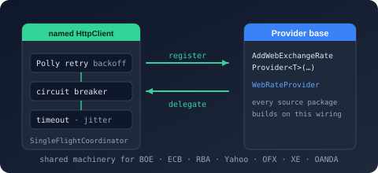
Bodu.Financial.ExchangeRates.DependencyInjection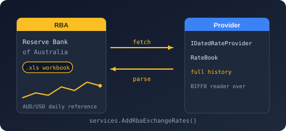
Bodu.Financial.ExchangeRates.Rba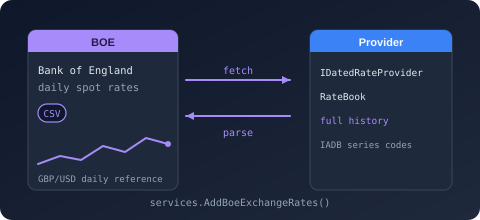
Bodu.Financial.ExchangeRates.Boe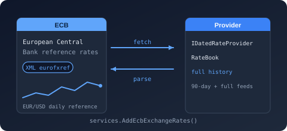
Bodu.Financial.ExchangeRates.Ecb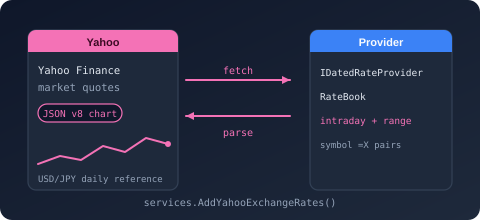
Bodu.Financial.ExchangeRates.Yahoo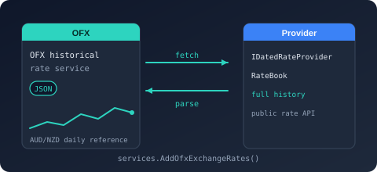
Bodu.Financial.ExchangeRates.Ofx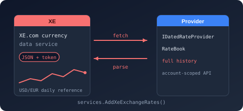
Bodu.Financial.ExchangeRates.Xe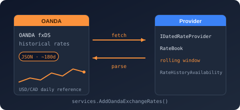
Bodu.Financial.ExchangeRates.Oanda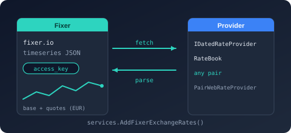
Bodu.Financial.ExchangeRates.Fixer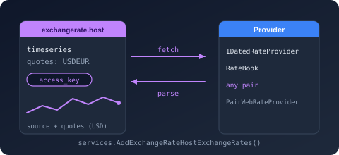
Bodu.Financial.ExchangeRates.ExchangeRateHost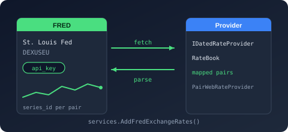
Bodu.Financial.ExchangeRates.Fred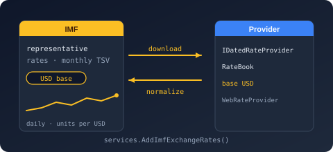
Bodu.Financial.ExchangeRates.Imf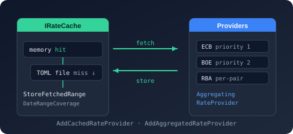
Bodu.Financial.ExchangeRates.Caching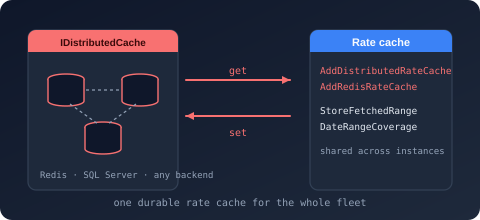
Bodu.Financial.ExchangeRates.Caching.Distributed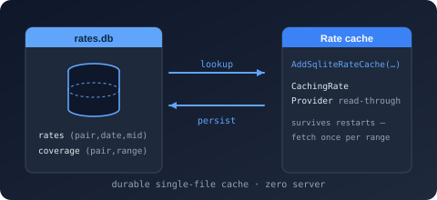
Bodu.Financial.ExchangeRates.Caching.SqliteCalendar data packs
Region-specific public-holiday rules ship as independent NuGet packages — one per region — so consumers pull in only the territories they need. Each is built on the notable-date schema and exposes a <Region>CalendarData factory over per-country embedded resource packs.
| Package | Status | Purpose | Depends on |
|---|---|---|---|
Bodu.Globalization.Calendar.Americas |
Stable | Curated public-holiday rules for the Americas territory bundle (e.g. US, CA). |
Bodu.Globalization.Calendar |
Bodu.Globalization.Calendar.AsiaPacific |
Stable | Asia-Pacific bundle (e.g. AU with subdivisions, CN, IN, JP, KR, MY, NZ, SG). |
Bodu.Globalization.Calendar |
Bodu.Globalization.Calendar.Europe |
Stable | Europe bundle (e.g. DE, ES, FR, GB, IT, NL). |
Bodu.Globalization.Calendar |
Bodu.Globalization.Calendar.Africa |
Stable | Africa bundle (e.g. ZA, NG, KE, GH, ET, EG, MA). |
Bodu.Globalization.Calendar |
Bodu.Globalization.Calendar.MiddleEast |
Stable | Middle East bundle (e.g. AE, SA, IL, TR, QA, JO). |
Bodu.Globalization.Calendar |

Bodu.Globalization.Calendar.Americas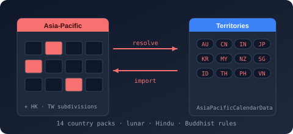
Bodu.Globalization.Calendar.AsiaPacific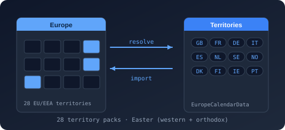
Bodu.Globalization.Calendar.Europe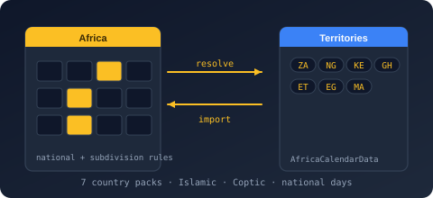
Bodu.Globalization.Calendar.Africa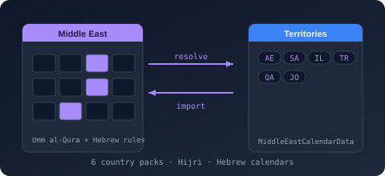
Bodu.Globalization.Calendar.MiddleEastSee the Calendar introduction for how the companion packages compose with the runtime, and the data-packs guide for per-bundle install commands and territory coverage.
Status meanings
| Status | What it commits to |
|---|---|
| Stable | The public API surface is committed. Breaking changes are reserved for a major-version bump; additive changes ship in minor versions; bug fixes in patch versions. |
| Preview | Offered for early evaluation. The public API surface is still taking shape and may change between releases without a major-version bump. |
| Experimental | Behaviour depends on an external resource that offers no versioned contract (for example a scraped web page), so it can stop working without any change on the Bodu side. Treat it as best-effort and pair it with a stable alternative. |
Status describes the API contract, not availability: it says what a version bump may do to code you have already written. Whether a package is on nuget.org is a separate decision, and four packages in this matrix are deliberately not — see below.
Not published to nuget.org
These four projects build and pack with the rest of the solution, and are documented here like any other package, but they are withheld from nuget.org on purpose. bld/release-manifest.txt records the reasoning; in short:
| Package | Why it is held back |
|---|---|
Bodu.Financial.ExchangeRates.Xe |
Authenticates with a token scraped from an unversioned XE.com page, so it can stop working through no fault of the code and no release can fix it. |
Bodu.Financial.ExchangeRates.Oanda |
Same class of fragility: OANDA's endpoint is undocumented and gated by bot mitigation. |
Bodu.Globalization.Calendar.Tool |
A PackAsTool CLI rather than a library — a different consumer contract from every other package here, warranting its own decision. |
Bodu.Globalization.Calendar.Build |
An MSBuild integration for the tool above, and held back with it. |
To use one, build it from a clone. The CLI installs from a local feed:
dotnet pack Bodu.Globalization.Calendar.Tool/src -c Release -o ./artifacts
dotnet tool install --global --add-source ./artifacts Bodu.Globalization.Calendar.Tool
For the three library/MSBuild packages, reference the project directly with <ProjectReference> instead of a PackageReference.
Install commands
The standard dotnet add package invocation for each published package:
# Primary libraries
dotnet add package Bodu.Core
dotnet add package Bodu.Collections
dotnet add package Bodu.Collections.Concurrent
dotnet add package Bodu.IO.Hashing
dotnet add package Bodu.Security.Cryptography
dotnet add package Bodu.Globalization.Calendar
dotnet add package Bodu.Text.Encoding
dotnet add package Bodu.Text.Filtering
dotnet add package Bodu.Text.Formats
dotnet add package Bodu.Text.Delimited
dotnet add package Bodu.Text.DotEnv
dotnet add package Bodu.Text.Ini
dotnet add package Bodu.Text.Toml
dotnet add package Bodu.Text.Bencode
dotnet add package Bodu.Text.Yaml
dotnet add package Bodu.Text.Configuration
dotnet add package Bodu.Extensions.Configuration.Text
dotnet add package Bodu.Numerics
dotnet add package Bodu.Financial
# Companions
dotnet add package Bodu.Globalization.Calendar.Builder
dotnet add package Bodu.Globalization.Calendar.DependencyInjection
dotnet add package Bodu.Globalization.Calendar.Plugins
dotnet add package Bodu.Globalization.Calendar.Caching
dotnet add package Bodu.Globalization.Calendar.Caching.Distributed
dotnet add package Bodu.Globalization.Calendar.Caching.Sqlite
dotnet add package Bodu.Globalization.Recurrence
dotnet add package Bodu.Text.Serialization
dotnet add package Bodu.Financial.DependencyInjection
dotnet add package Bodu.Financial.Serialization.Json
dotnet add package Bodu.Numerics.Serialization.Json
# File formats and exchange-rate data
dotnet add package Bodu.IO.Compound
dotnet add package Bodu.IO.Biff
dotnet add package Bodu.Formats.Excel.Binary
dotnet add package Bodu.IO.Pst
dotnet add package Bodu.Formats.Outlook
dotnet add package Bodu.Formats.Outlook.Msg
dotnet add package Bodu.Formats.Outlook.Pst
dotnet add package Bodu.Financial.ExchangeRates
dotnet add package Bodu.Financial.ExchangeRates.DependencyInjection
dotnet add package Bodu.Financial.ExchangeRates.Rba
dotnet add package Bodu.Financial.ExchangeRates.Boe
dotnet add package Bodu.Financial.ExchangeRates.Ecb
dotnet add package Bodu.Financial.ExchangeRates.Yahoo
dotnet add package Bodu.Financial.ExchangeRates.Ofx
dotnet add package Bodu.Financial.ExchangeRates.Fixer
dotnet add package Bodu.Financial.ExchangeRates.ExchangeRateHost
dotnet add package Bodu.Financial.ExchangeRates.Fred
dotnet add package Bodu.Financial.ExchangeRates.Imf
dotnet add package Bodu.Financial.ExchangeRates.Caching
dotnet add package Bodu.Financial.ExchangeRates.Caching.Distributed
dotnet add package Bodu.Financial.ExchangeRates.Caching.Sqlite
# Calendar regional data packs (install only what you need)
dotnet add package Bodu.Globalization.Calendar.Americas
dotnet add package Bodu.Globalization.Calendar.AsiaPacific
dotnet add package Bodu.Globalization.Calendar.Europe
dotnet add package Bodu.Globalization.Calendar.Africa
dotnet add package Bodu.Globalization.Calendar.MiddleEast
Bodu.Financial.ExchangeRates.Testing — the contract-test bases the provider and cache test projects derive — is a source-only project in the repository (IsPackable=false) and is not published to NuGet.
Design principles
- Minimal external runtime dependencies. Core libraries depend only on the BCL. Extension packages (
Bodu.Extensions.Configuration.Text,Bodu.Globalization.Calendar.DependencyInjection) intentionally bridge to the Microsoft.Extensions ecosystem. - Nullable reference types are enabled throughout. Public APIs declare their null-intent explicitly.
- Analyzer-clean: StyleCop, Roslynator, .NET analyzers, AsyncFixer, and Threading analyzers run at build time; doc-comment warnings are treated as errors.
- Deterministic builds for reproducible package outputs.
- Documentation-first: every public type and member carries XML documentation in US English, which drives the API reference.
- MIT licensed.
Where to go next
- Introduction — high-level overview of the suite.
- Getting started — install and run minimal samples across the suite.